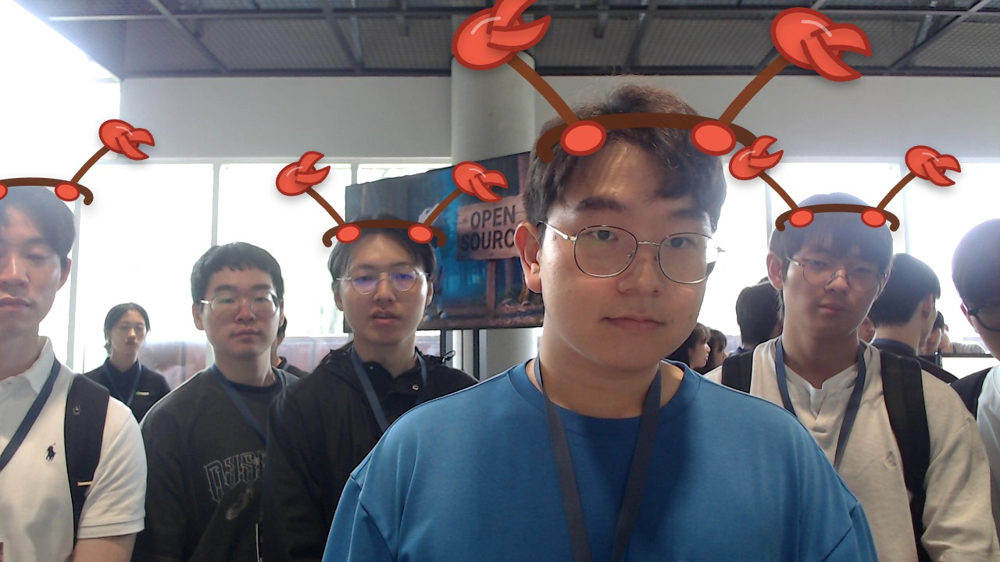

Woongseob han
optical engineer
MOTTOMAKE WORLD FASTER WITH GPUS
Woongseob Han | 광학 엔지니어
About me
engineer
What I do
AI-written bio
광학 엔지니어로서 엔지니어링 문제를 탐구하며, GPU를 활용해 더 빠른 세상을 만드는 데 관심을 둡니다.
AI first impression
차분하고 기술 커뮤니티 분위기에 잘 어울리는 실용적인 인상입니다.